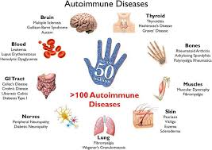

Autoimmune Disease
SYMPTOMS
- An autoimmune disease is a condition in which your immune system mistakenly attacks your body.
- The immune system normally guards against germs like bacteria and viruses. When it senses these foreign invaders, it sends out an army of fighter cells to attack them.
- In an autoimmune disease, the immune system mistakes part of your body, like your joints or skin, as foreign. It releases proteins called autoantibodies that attack healthy cells.
- fatigue
- achy muscles
- swelling and redness
- low-grade fever
- trouble concentrating
- numbness and tingling in the hands and feet
- hair loss
- Individual diseases can also have their own unique symptoms. For example, type 1 diabetes causes extreme thirst, weight loss, and fatigue. IBD causes belly pain, bloating, and diarrhea.
- With autoimmune diseases like psoriasis or RA, symptoms may come and go. A period of symptoms is called a flare-up. A period when the symptoms go away is called remission.
- Symptoms like fatigue, muscle aches, swelling, and redness could be signs of an autoimmune disease. Symptoms might come and go over time.
What is Autoimmune Disease?
